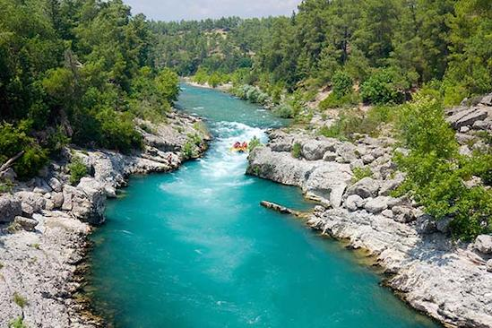
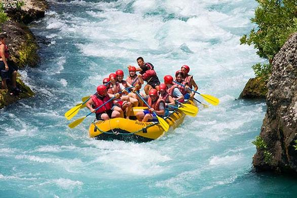
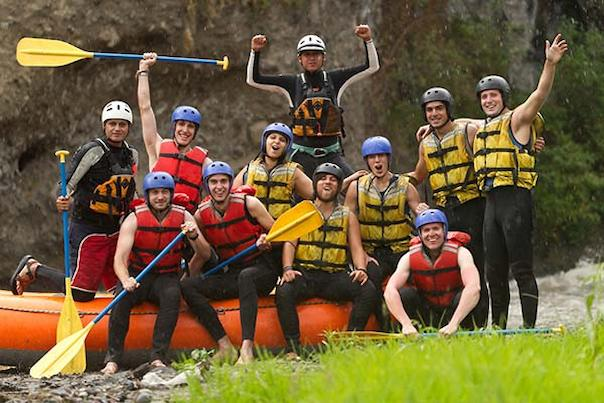
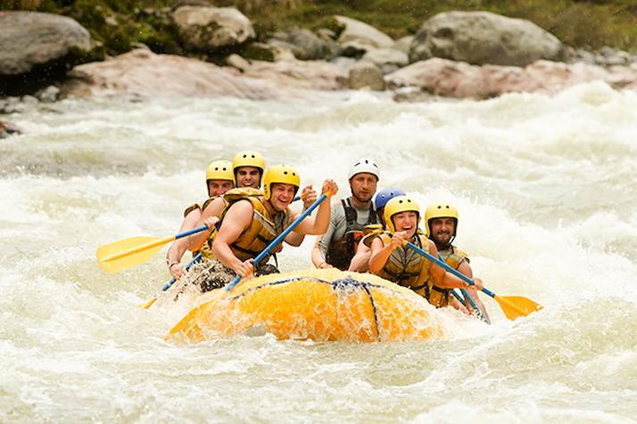
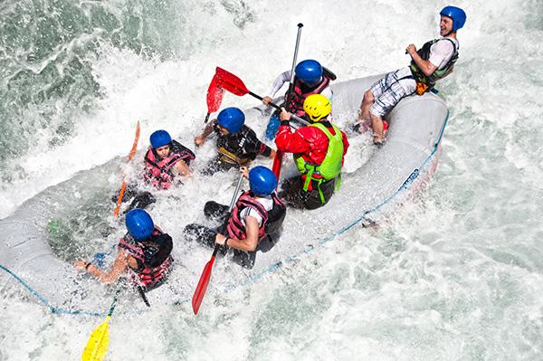
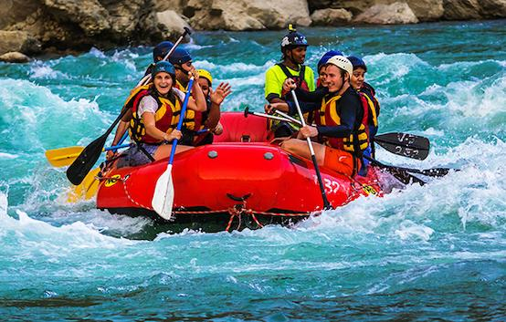

At Kavango Rapids, our mission is to share the power and beauty of Namibia's Kavango River through safe, guided adventures. We believe every rapid tells a story, and every guest should leave the water with a new one of their own.

At Kavango Rapids, our mission is to share the power and beauty of Namibia's Kavango River through safe, guided adventures. We believe every rapid tells a story, and every guest should leave the water with a new one of their own.
Kavango rapids was founded by a small group of local guides who grew up swimming and fishing along the Kavango River..

Today we run trips for first-timers and seasoned paddlers alike, always led by guides who call this river a home.




